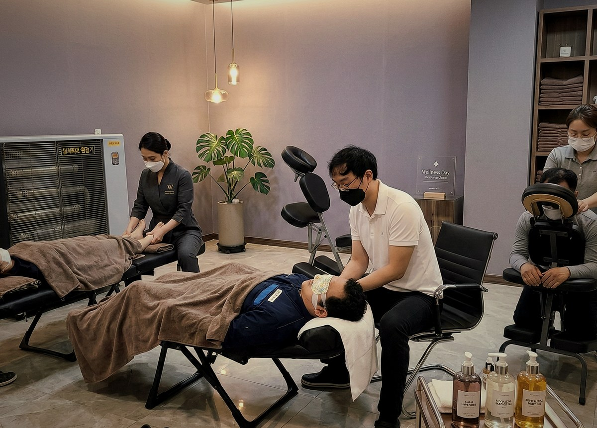
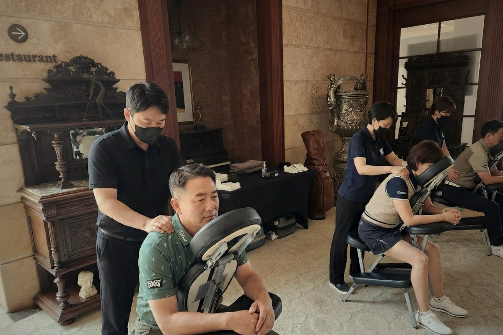

p3 재디자인 목업 (모바일)
기존 p3 섹션의 이슈 3가지 중 A (태그) + C (번호 처리)를 적용한 안.
이미지(B)는 별도 교체 필요 — 현재는 기존 이미지 그대로.
현재 라이브 비교
About Us
마사지를 넘어,
피지컬 케어와 힐링으로
피지컬 케어와 힐링으로
아우름 웰니스는
마사지 테라피스트, 체형교정 전문가, 요가·필라테스 강사 등 피지컬 케어와 웰니스 분야의 전문가들이 맞춤형 테라피 서비스를 제공하는 B2B 종합복지서비스 전문업체입니다.
A — Tag chips

Corporate Wellness
기업 임직원 복지 서비스
정기적 사내 피지컬 케어, 체형교정 프로그램, 힐링 테라피 등 임직원의 건강과 업무 효율을 동시에 높이는 맞춤 복지.

VIP · Brand Event
VIP · 브랜드 이벤트
프리미엄 골프대회, 신제품 런칭쇼, 백화점 VIP 고객 대상의 고품격 힐링 테라피로 브랜드 경험을 한 차원 높임.
변경점 (A): 다크 배경 + 흰 글씨 + 4칸 균등분할 → 골드 라인 테두리 · cream 칩 · serif 영문 스타일.
전체 에디토리얼 톤과 통일. 글자수에 따라 2열로 자연스럽게 wrap.
전체 에디토리얼 톤과 통일. 글자수에 따라 2열로 자연스럽게 wrap.
C — Number treatment

01
Tailored Therapy
맞춤형 테라피 서비스
원하는 시간과 장소에서 기업 니즈에 맞춘 테라피를 제공합니다.

02
Focus & Productivity
업무 집중력 향상
임직원 스트레스 해소로 업무 효율 및 기업 성장을 도모합니다.

03
Tangible Benefits
체감형 복지
높은 임직원 만족도와 기업 애사심 고취 효과를 제공합니다.
변경점 (C): 좌측 대형 골드 워터마크 숫자 (44px) → 상단 "01 ———" 라인 스타일.
#p1b "Our Commitment" 섹션과 동일한 번호 처리 → 연속 섹션으로서 일관성.
추가: 영문 부제(Tailored Therapy)로 에디토리얼 톤 보강.
#p1b "Our Commitment" 섹션과 동일한 번호 처리 → 연속 섹션으로서 일관성.
추가: 영문 부제(Tailored Therapy)로 에디토리얼 톤 보강.
현재 라이브 → mobile.html#p3
이 목업 → mockup-p3-redesign.html
이 목업 → mockup-p3-redesign.html